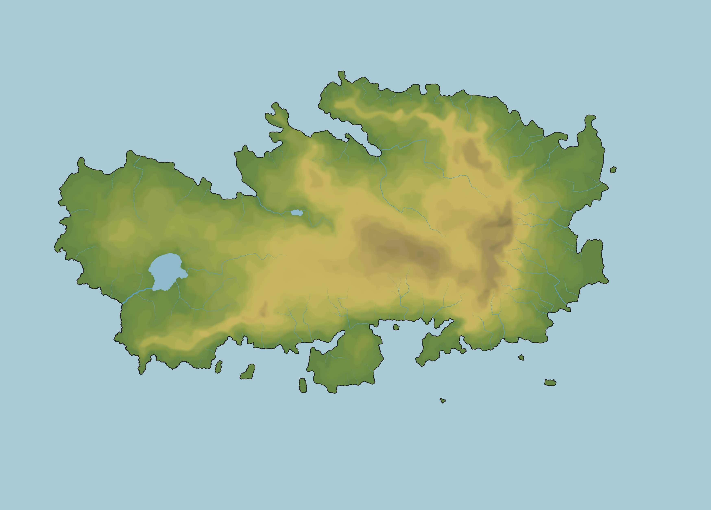

PLANE
HDG 360°
Flight controls arrive in Step 6.
MYOSIA TRAINING REGION
Web port · Step 3: selectable VOR stations

PLANE
HDG 360°
Flight controls arrive in Step 6.
NAV 1
---.---
Radio state arrives in Step 5.
NAV 2
---.---
Radio state arrives in Step 5.